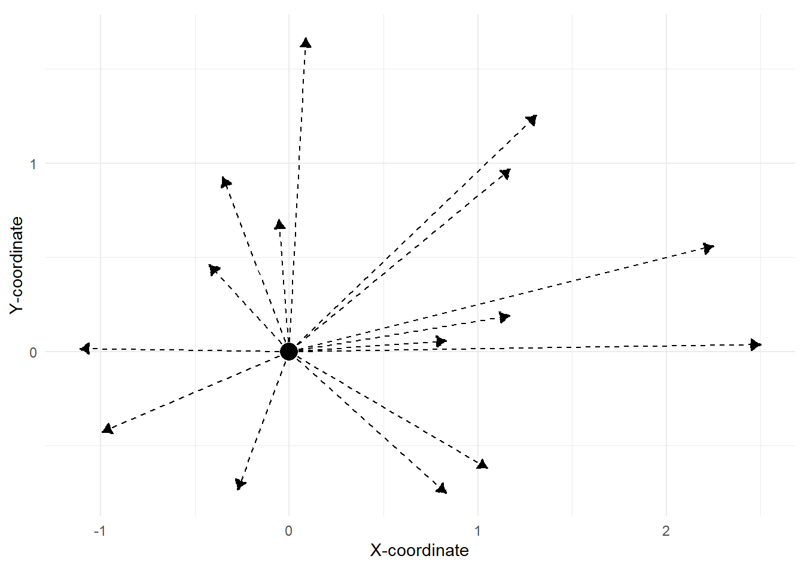

Random Walks
Analysis of Animal Movement Data with R (with Johannes Signer)
Brian J. Smith ![]()
Utah State University
February 15, 2026
Continuous vs. Discrete Time
“Moving animals trace continuous paths through space. However, in order to record and analyze the pattern of their movement the essential characteristics of an observed path have to be represented in a discrete form suitable for computer storage and analysis… Note that this empirical approach to representing paths fits well with the theoretical framework of discrete random walks.”
— Turchin 1998, p. 128

Continuous vs. Discrete Time
“The discrete-time context is valuable because (1) a wealth of tools can be borrowed from the time series literature, (2) the dynamics are easily conceptualized in discrete time, and finally, (3) we are implementing models digitally on computers, thus we must discretize … One could argue, however, that the true process of movement really occurs in both continuous time and continuous space.”
— Hooten et al. 2017, p. 189
{kind=link}
Simple Random Walk (RW)
From a step representation
Random
\[l_t \sim gamma(\alpha, \beta)\] \[\theta_t \sim von Mises(\mu, \kappa)\]
Calculated
\[\Delta x_t = l_t \cos(\theta_t)\] \[\Delta y_t = l_t \sin(\theta_t)\]

Correlated Simple Random Walk (RW)
Use a step representation
Random
\[l_t \sim gamma(\alpha, \beta)\] \[\Delta\theta_t \sim von Mises(\mu, \kappa)\]
Calculated
\[\theta_t = \theta_{t-1} + \Delta \theta_t\]

{kind=link}
{kind=link}
Brownian Motion
- Pure random walk in continuous time.
- Constant diffusion rate.
- Named for Robert Brown, who described the motion of pollen grains in water.
- Inspired Einstein to model this system as the pollen grain being moved by individual water molecules.
- His work on Brownian motion provided support for the existence of atoms.

Brownian and Anomalous Diffusion